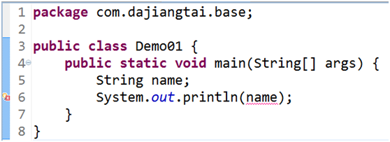
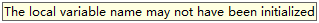
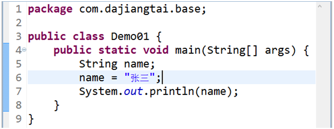

4.4. Java变量
变量是Java程序中的基本存储单元。
定义变量的格式：
数据类型 变量名 = 初始化值；
也可以先声明，在赋值：
数据类型 变量名;
变量名 = 值;
为什么要定义变量：
用来不断的存放同一类型的常量，并可以重复使用
使用变量注意：
需要初始化值
在变量作用范围内（一对{}之间有效）
声明（定义）一个变量name，name是一个表示符，代表名字。变量必须有明确的类型，它类型是String，字符串。在还没有给name赋值的的情况，就是使用name，这时候会编译出错：

将鼠标放到小红叉上，就可以看到报错信息：

这是局部变量可能还没有初始化的意思。
注：有时候 MyEclipse 工具的提示的并不准确，就需要大家熟悉语法后，凭经验调试了。
声明了一个变量之后，还要进行初始化才能使用这个变量。也可以说要想使用一个变量，这个变量必须有值。
所以在使用name之前，给它赋一个字符串值就可以了。

这时候，编译没有出错，运行也是OK的。
如果在main方法中在定义一个同名的变量，不管它是什么类型，都会编译出错。